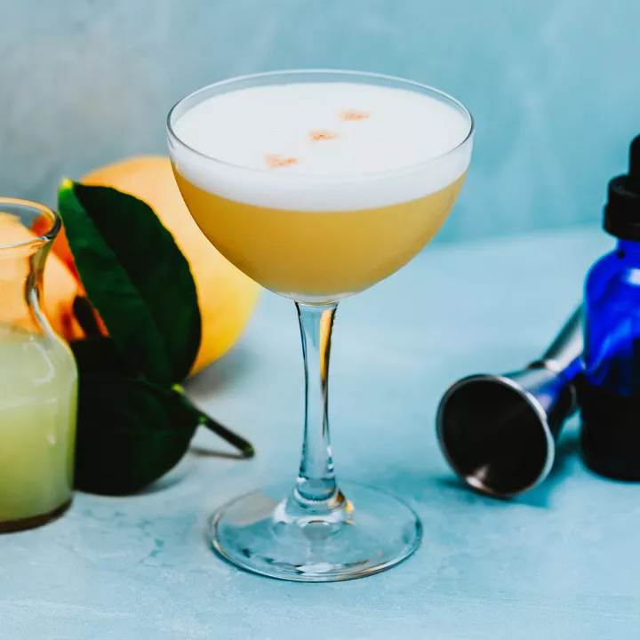

Whiskey Sour

Description
The whiskey sour is a classic and highly customizable cocktail. Perfect on a hot summers day.
The recipe I'm showing you today is pretty classic, but with one simple twist! Angostura Bitters as a garnish.
Just as a reminder, the egg whites in this recipe is completly optional, as Consuming raw eggs poses a risk of food-borne illness.
Ingredients
- 2 ounces favorite whiskey (I'm using Knob Creek Bourbon)
- 3/4 ounce fresh squezzed lemon juice
- 1/2 ounce simple syrup
- 1/2 ounce egg white (optional)
- Few dashes angostura bitters for garnish (optional)
Instructions
Reminder: If making your own simple syrup, allow to completly cool before using as you run the risk of cooking the egg white if syrup is too warm
- Add whiskey, lemon juice, simple syrup, and egg white to shaker and shake without ice (dry shake) for 30 seconds
- Add ice and vigorously shake for 30 seconds, or until well chilled
- Strain into a coupe glass (or any glass of your prefernce)
- Garnish with a few (3-4) dashes of angostura bitters
- Enjoy!